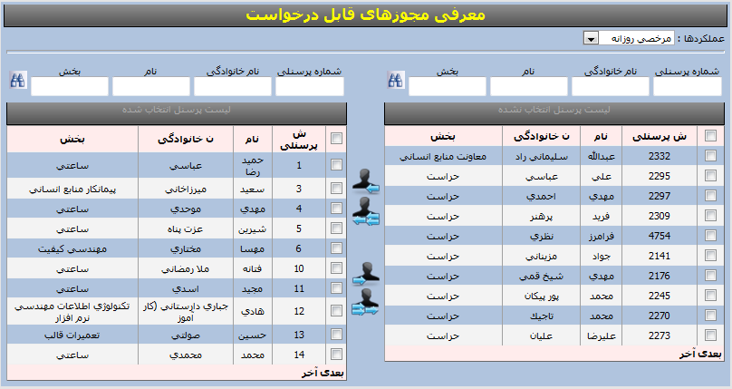

معرفی مجوزهای قابل درخواست
تمامی مجوزهای سیستم در این منو لیست میشوند(مجوزهای ساعتی و روزانه و ...) با انتخاب هر مجوز میتوان پرسنلی که به مجوز انتخابی دسترسی دارند را مشاهده کرد میتوان به شخص خاصی دسترسی داد و یا دسترسی را محدود کرد

دسترسی یک عملکرد را به پرسنل انتخاب شده داده میشود
دسترسی یک عملکرد را به همه پرسنل داده میشود
دسترسی یک عملکرد از پرسنل انتخاب شده گرفته میشود
دسترسی یک عملکرد از پرسنل گرفته میشود